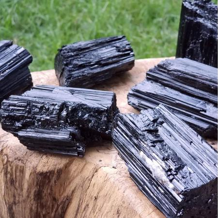
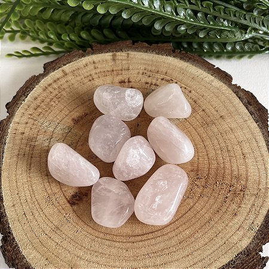
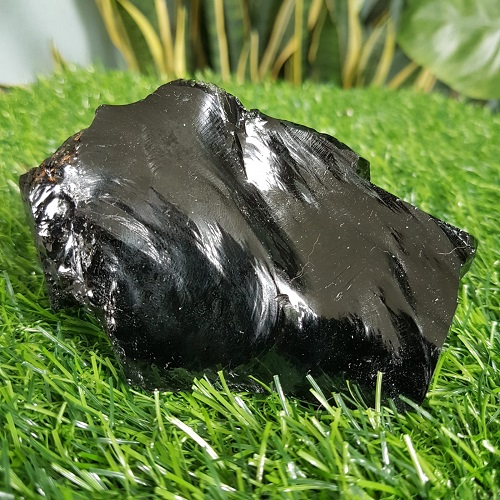
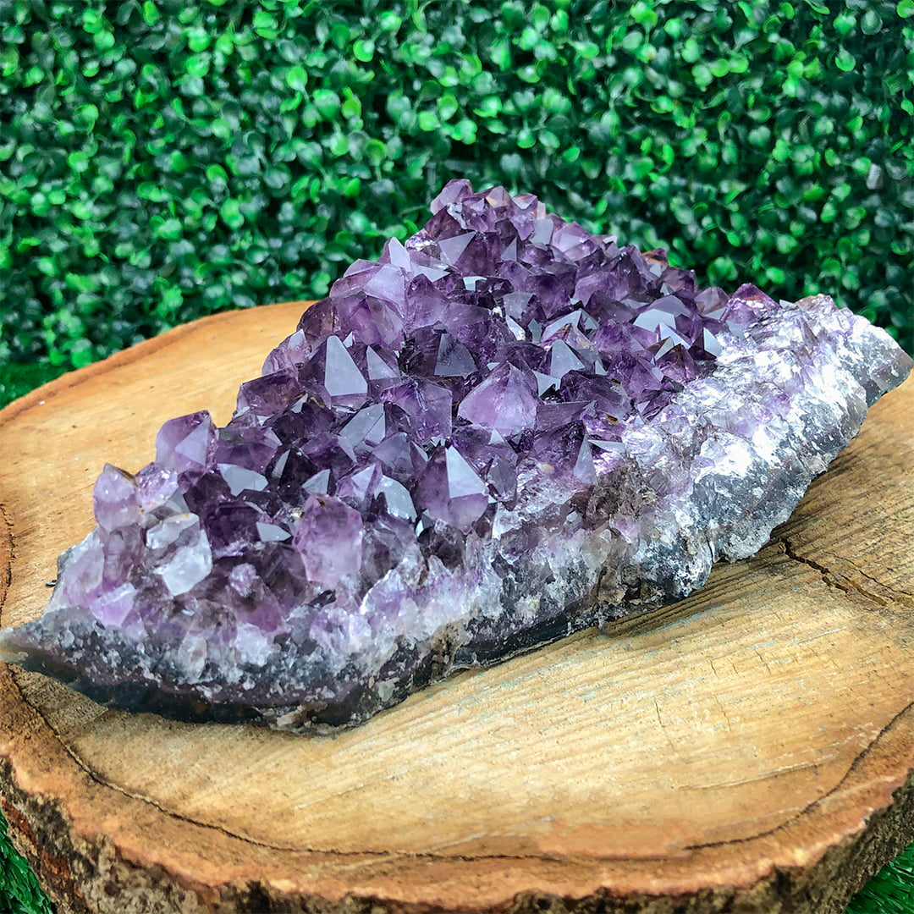

.png)
O que é?
Do ponto de vista antropológico a Bruxaria pode ser vista como sinônimo de feitiçaria, magia, curandeirismo e xamanismo. Ou seja, é considerado Bruxaria práticas de feitiçaria populares ao redor do mundo, como por exemplo usar arruda para afastarmau olhado, queimar cascas de alho para afastar maus espíritos ou dar 7 nós em uma corda vermelha, conjurando as forças superiores para pedir proteção. A Bruxaria Natural em específico é apenas uma de diversas vertentes da Bruxaria, e é classificada como um estilo de vida, não como uma religião, embora muitas pessoas que são bruxas ou bruxos tem o cotume de dizer que são da "religião" Bruxaria, a mesma não é comsiderada como uma religião pois não tem certos dogmas, não cultuamos um Deus ou uma Deusa em específico, também não celebramos certas tradições que a Wicca celebra, por exemplo. Nós da Bruxaria Natural cultuamos o sagrado natural e os 4 elementos.
A Santa Inquisição
A chamada "Santa Inquisição" ou "Santo Ofício" foi criada pelo Papa Gregório IX, em 1233 e extinto em 1821, porém as praticas mais violentas duraram apenas 285 anos. A mesma foi fundada com o intuito de punir as pessoas que desviavam das normas de conduta, os hereges. Naquela época, o Catolicismo era oque dominava toda a Europa, mas a Igreja estava preocupada com as demais ceitas. O Pêndulo foi o mais utilizado, a fim de deslocar os ombros e ferir coluna e membros inferiores. O Cavalete fazia a pessoa sufocar ou entrar em desespero psicológico. A Pera foi muito utilizada em adúlteros, acusados de incesto, homossexuais e relações sexuais satânicas, para ferir região oral e genital.
Na Bruxaria, cada cor de vela corresponde a uma determinada energia
Vela Verde:
A vela verde é usada para magias de cura, dinheiro, conexão com a natureza, esperança, regeneração e recuperação.
Vermelha:
Para paixão, sensualidade, atitude, coragem, ousadia, tomada de decisões, aflorar a sexualidade e trazer autoconfiança.
Rosa:
Amor, carinho, autoestima, beleza, ternura, bons pensamentos e desfazer o ódio.
Amarela:
Alegria, prosperidade, negócios, empreendedorismo, fartura, elevar a energia astral e estimular a inteligência.
Laranja:
Criatividade, energia positiva, afastar o medo e espantar a depressão.
Azul:
Calma, equilíbrio, paz, facilita a comunicação com o mundo oculto, harmonia e acalma situações tensas.
Marrom:
Realização material, prosperidade, conexão com o elemento terra e promove justiça.
Preta
Para afastar energias negativas, limpar o ambiente, realizar banimentos e abrir os níveis do subconsciente. A cor preta é a mais escura no espectro de cores, logo também é a junção e absorção de todas as cores do Universo.
Branco:
Considerada uma vela “coringa” e pode ser usada para substituir outras cores. Acender uma vela branca traz paz, harmonia, leveza e potencializa a fé.
Cristais e suas propriedades mágicas
Turmalina Negra
A mesma serve para proteção seja contra inveja e mau olhado, a Turmalina Negra também dissipa as energias negativas. É uma grande aliada para quem é sensitivo (a)
Ametista
A Ametista é considerada a pedra da sabedoria e equilíbrio, ligada à proteção, vitalidade e elevação espiritual.
Quartzo Rosa
Quartzo Rosa é a pedra do amor e da paz que possibilita a cura interior e a purificação do corpo emocional através da ativação do Chakra do coração. Ele repele as energias negativas e potencializa as vibrações do amor, possibilita harmonia e paz em relacionamentos estabelecidos e ao ambiente familiar.
Obsidiana
É uma pedra de aterramento que nos conecta ao centro da Terra e assim dissolve todas as energias negativas. Esta pedra cria um escudo capaz de bloquear e quebrar ataques de magia negra, olho gordo e inveja.
   Livros
Nem sempre se pode confiar em tudo o que lemos na internet, muitas dessas coisa sao "falsas" ou não esteja relacionado ao que você procura...então tome cuidado como o que mexe, por isso é sempre bom procurar ajuda e sabedoria por outros meios, como pessoas mais experientes que você em tal área e principalmente em livros, alguns livros ótimos para quem está começando na Bruxaria Natural são:
Bruxa Natural - Guia Completo
A Casa da Bruxa Natural - Guia Completo
O Bem Estae da Bruxa Natural - Guia Completo
Bruxaria Verde
O Livro da Magia das Velas
O Livro de Feitiços para Novas Bruxas